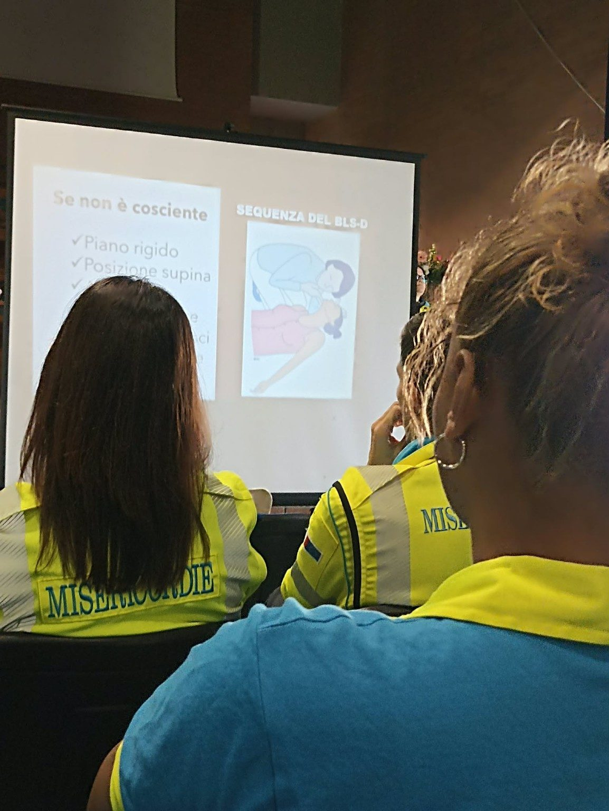

Che cos'è una Misericordia, che cosa fa ad Ariccia e come si può dare una mano: da volontari e, dai 18 ai 28 anni, con il Servizio Civile Universale.
Misericordia di Ariccia
Domanda d'apertura: «Che cosa vi viene in mente se dico volontario?». Di solito si pensa all'ambulanza: in queste slide si vede che i servizi sono molti di più.
Volontariato e Servizio Civile
Che cos'è una Misericordia
Una confraternita di volontari: persone comuni che donano un po' del loro tempo per stare accanto a chi è malato, solo o in difficoltà, ispirate alle Opere di Misericordia.
Le Misericordie sono tra le più antiche associazioni di volontariato al mondo. Oggi sono Enti del Terzo Settore, spesso Organizzazioni di Volontariato (ODV), come la Misericordia di Ariccia.
La Confederazione nazionale riunisce oggi circa 670.000 iscritti, con oltre 100.000 volontari attivi.
Misericordia di Ariccia
Fonti: dossier «Otto secoli di carità» del sito; pagina «La Confederazione» di misericordie.it (letta il 18/11/2026). Il Codice del Terzo Settore è il decreto legislativo 117 del 2017.
Volontariato e Servizio Civile
Quasi otto secoli di storia
1244
A Firenze nasce la prima Misericordia: il frate Pietro da Verona ne scrive le prime regole.
1348
Nella peste nera i confratelli soccorrono i malati quando tutti fuggono.
1495
La «buffa», la veste che copre il volto, diventa nera: chi aiuta resta anonimo.
1899
A Pistoia le Misericordie si uniscono: nasce la Confederazione.
1994
Nasce la Misericordia di Ariccia, ai Castelli Romani.
Misericordia di Ariccia
Tappe dal dossier del sito «Otto secoli di carità». La tradizione racconta anche del facchino Piero Borsi e delle sei ceste per portare i malati: storia e leggenda si intrecciano. La buffa era in origine rossa e dal 1495 diventa nera.
Volontariato e Servizio Civile
Che cosa facciamo ad Ariccia
Trasporti sanitari e sociali
Con due ambulanze, un mezzo con la pedana per le carrozzine e le auto dei servizi sociali.
Centro di Ascolto e Banco Alimentare
Accogliere e ascoltare le famiglie in difficoltà, distribuire generi alimentari.
Assistenza agli eventi
Presidio sanitario a gare sportive, feste e sagre del territorio.
Formazione e Servizio Civile
Corsi di primo soccorso aperti a tutti; un anno di servizio per i giovani.
Misericordia di Ariccia
Servizi delle pagine «I nostri servizi» e «Diventa volontario» del sito. Il Banco Alimentare e il Centro di Ascolto sono gratuiti.
Volontariato e Servizio Civile
E che cosa non facciamo
La Misericordia di Ariccia fa trasporti programmati, assistenza agli eventi e corsi: non sostituisce il soccorso pubblico.
In un'emergenza si chiama sempre il 112, non il numero della Misericordia: la centrale manda l'ambulanza giusta, nel posto giusto.
Anche questo è essere cittadini attivi: sapere chi fa che cosa e usare bene i servizi di tutti.
Misericordia di Ariccia
Dalla guida del sito «Cosa succede quando chiami il 112», paragrafo «Che cosa facciamo noi, e che cosa no». Per i casi pratici c'è la scheda «Il numero giusto al momento giusto».
Volontariato e Servizio Civile
Che cosa fa una volontaria, un volontario
Non solo l'ambulanza. Si può guidare un mezzo, accompagnare una persona anziana a una visita, ascoltare chi è solo, preparare i pacchi del Banco Alimentare, dare una mano a una festa.
Non servono capacità speciali: la formazione si fa insieme, passo dopo passo. Contano le mani, l'ascolto e la presenza.
Persone comuni che, un gesto alla volta, diventano «artigiani di misericordia».
Misericordia di Ariccia
Dalla pagina «Diventa volontario» del sito. L'espressione «artigiani di misericordia» è della stessa pagina.
Volontariato e Servizio Civile
Come si diventa volontari
Contattaci o passa a trovarci, in sede, per telefono o su WhatsApp: ti raccontiamo chi siamo e che cosa facciamo.
Presenta la domanda di ammissione: basta una domanda scritta, con il modulo di iscrizione.
Inizia il percorso: la formazione la facciamo insieme, fino a quando sarai pronto per il servizio.
Il Movimento delle Misericordie accoglie uomini e donne dai 16 agli 80 anni. Se hai meno di 18 anni, chiedi in sede quali servizi puoi fare.

Foto: Misericordia di Ariccia
Misericordia di Ariccia
Passi ed età dalla pagina «Diventa volontario» del sito. Il modulo di iscrizione si scarica dalla stessa pagina.
Volontariato e Servizio Civile
Il Servizio Civile Universale
Un periodo di servizio alla comunità, in Italia o all'estero, con un progetto di un ente: per chi ha compiuto 18 anni e non superato i 28.
8–12
mesi: la durata dei progetti
25
ore alla settimana, oppure un monte ore annuo
519,47€
l'assegno mensile riconosciuto dallo Stato
80
ore di formazione, almeno
Possono partecipare cittadini italiani, di altri Paesi dell'Unione europea e di Paesi extra UE regolarmente soggiornanti in Italia. Fonte: scelgoilserviziocivile.gov.it (18/11/2026).
Misericordia di Ariccia
Dati del portale ufficiale del Dipartimento per le politiche giovanili e il Servizio civile universale. «Non superato i 28» vuol dire fino a 28 anni e 364 giorni alla data della domanda. Alla fine si riceve un attestato di partecipazione; le competenze acquisite possono essere riconosciute.
Volontariato e Servizio Civile
Il Servizio Civile con noi
Dal 2015 la Misericordia di Ariccia partecipa ai bandi. I nostri progetti aiutano a combattere la solitudine delle persone fragili, soprattutto anziani e persone con disabilità, con il sostegno di ogni giorno e l'ascolto.
Leggi il bando su scelgoilserviziocivile.gov.it e cerca i progetti delle Misericordie del Lazio con sede ad Ariccia.
Fai la domanda online su DOL, con SPID o Carta d'identità elettronica: una sola domanda, per un solo progetto.
Dopo la scadenza c'è il colloquio di selezione.
Misericordia di Ariccia
Dalla pagina «Servizio Civile Universale» del sito: dal 18 settembre 2026 sono in servizio 2 giovani con il progetto «Misericordie del Lazio unite per la rete 2025»; le candidature per quel progetto sono chiuse. Il nuovo bando viene annunciato sul sito.
Volontariato e Servizio Civile
Parliamone
C'è qualcuno, nel vostro quartiere, che vive solo? Che cosa potrebbe aiutarlo?
Quante ore alla settimana potreste dedicare agli altri, davvero?
Che cosa si impara facendo volontariato, che a scuola non si impara?
Perché, secondo voi, per secoli chi aiutava si copriva il volto?
Misericordia di Ariccia
L'ultima domanda riprende la «buffa»: l'anonimato del soccorritore secondo il Vangelo, «non sappia la tua sinistra quello che fa la tua destra» (dossier del sito sulla storia).
Volontariato e Servizio Civile
Per saperne di più
Iscrizioni e Servizio Civile
328 8105399
Email
sede@misericordia-ariccia.it
Sede amministrativa
Viale Antonietta Chigi 46, Ariccia
Sul sito
/diventa-volontario/ /servizio-civile/
«Che Iddio ve ne renda merito»: l'antico motto delle Misericordie, per chi dona il suo tempo.
Misericordia di Ariccia
Recapiti dalle pagine Contatti, Diventa volontario e Servizio Civile del sito.